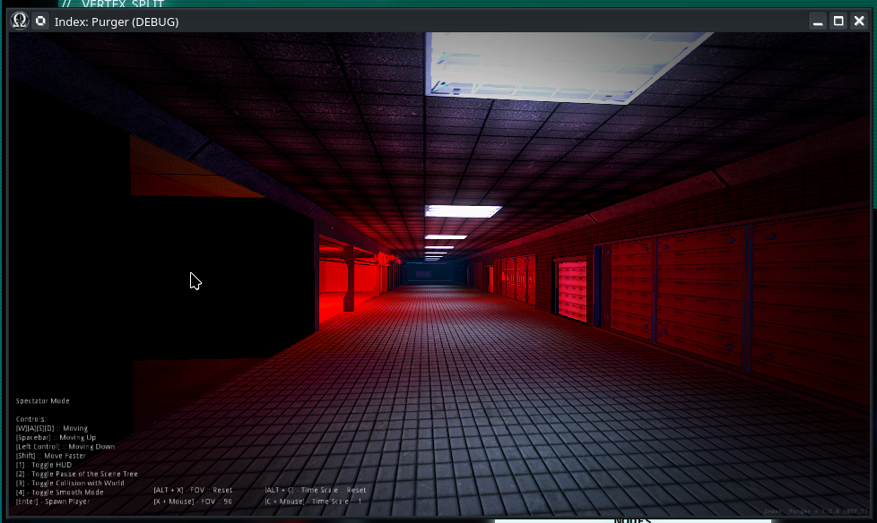

Module: spectator_camera
Documentation last edited: October 23, 2025 at 14:33 UTC
Description
Камера наблюдателя. Многообещающее название, которое должно говорить само за себя. Ага... Оно должно очень хорошо всё объяснять... Я до сих пор не уверен, что тут писать... Может, картинка сработает?

Итак... Это камера наблюдателя. Чёрт, мы ходим по кругу, и я до сих пор не имею понятия, что, чёрт возьми, я должен здесь написать. Это просто летающая камера, да ладно, разве это не должно объясняться легко? Вот и всё. Просто используй консольную команду
toggle_spectator_camera
, чтобы понять, что это такое на самом деле.
Пример использования
# Создание
var spec_cam = SpectatorCamera.create_camera()
# Имей в виду - она сама по себе не удалит игрока
Не хватает информации, как говна за баней, но лучше, чем ничего, верно?
General Information
Root directories list
assets, docs, src
Nodes
Classes
None
Resources
None
Other Scripts
None